Week 5
Learning from Random Samples
Motivating Example
Roasting Coffee: Introduction
- This is the set shot
- Coffee is one of life’s innumerable joys. It is also the best of them.
- There are flavors, complexity, bitterness, sweetness – and caffiene.
- I’ve been roasting coffee at home, for several years, I’ll take you on a little tour. Don’t worry, there’s a reason.
Roasting Coffee: Field Trip
- Introduce (a) green coffee (and its range of size and dryness); (b) the roaster; (c) the temperature scope; (d) the young gun; and (e) the tryer.
- Introduce the tryer,then show trying before drop.
- Within each of these ``trys’’ I’ve got a sample that has been jumbled up for 10 minutes. I’ve drawn about 30 beans, each from the same distribution.
- Ask students: In casual terms, would you say that the beans that I pull out are ``random’’?
- I sure would!
- But, for our statistics to work, we need something that is different, and more specific than ``random’’ – we will need independent and identically distributed.
- The jumbling of these beans means that each bean’s draw is independent of each other bean in the barrel.
Statistics, Parameters, and Estimators
Introduction to Properties of Estimators
Estimating Characteristics of Populations
- Data scientists are not given the joint density distribution.
- One of our principle tasks is to produce estimates about the universe given only the limited information that we get from a sample of data.
Estimating Characteristics of Populations (cont.)
- A paramater , \(\theta\) , is some summary of the joint distribution.
- A statistic is some function that maps data from \(\R^{n} \to \R\) .
- An estimator , \(\hat{\theta}\) , is some statistic of the data that we use to produce a guess for \(\theta\) .
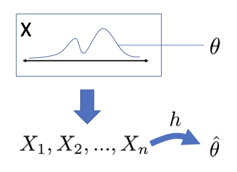
We can’t observe the joint distribution directly, so we try to make guesses about it.
An estimator could be any function of the statistic. Here, we’ll pass the data through function h and get estimator
\(\overline{X}\) is an Estimator
We refer to statistics that are ``good’’ guesses for a population parameter as
estimators .
- \(\theta = \E[X]\) is a parameter.
- \(T_{(n)} = \text{choose the 30}^{th} \text{ percentile}\) is a statistic
- \(\hat \theta = \overline{X}\) is an estimator for \(\theta\) .
Introducing Estimators
In this section, you will learn about the properties that make estimators good guesses for a population parameter.
- Consistency: As sample size grows, does the estimator converge in probability to the true value?
- Bias and unbiasedness : Is the estimator systematically too low or too high?
- Efficiency: Does an estimator have relatively large or small sampling variance, standard error, and MSE?
- Consistency
- Bias
- Efficiency
Reading: Core Estimation Theory
Reading: Core Estimation Theory
Note: This is a READING CALL, just placing it here for organization.
Read pages 102–105, stopping at 3.2.3, Variance Estimators.
Desirable Properties of Estimators
Desirable Properties of Estimators
Throughout, we refer to \(\theta\) as a population feature
or parameter .
- \(\theta\) has a fixed, true value, but this value is not directly observable.
- Without ground truth, how can we know if our estimator is doing its job?
- Test-driven development, engineering, analogy – software teams imagine every scenario possible, write a testing suite – and conduct tests before releasing. That’s how they know it ``works’’. Because we don’t know
- Reasoning and evaluating these properties is one of the reasons that we have invested in probablity theory!
Desirable Properties of Estimators: Unbiasedness
The bias of an estimator is the expected difference between the true population value and the estimator. - The bias of \(\hat{\theta}\) is \(\E[\hat{\theta}] - \theta\) . - If \(\E[\hat{\theta}] = \theta\) , then there is no bias, and the estimator is unbiased .
Desirable Properties of Estimators: Unbiasedness (cont.)
If \(\hat{\theta}\) is unbiased, does that mean that, for any sample taken, the estimate produced by \(\hat{\theta} = \theta\) ?
- \(\hat{\theta}\) as an estimator is a random variable.
- The value that it takes on given a sample is the estimate .
- Draw an unbiased estimator!
- As a RV,
- The
- Draw a biased estimator!
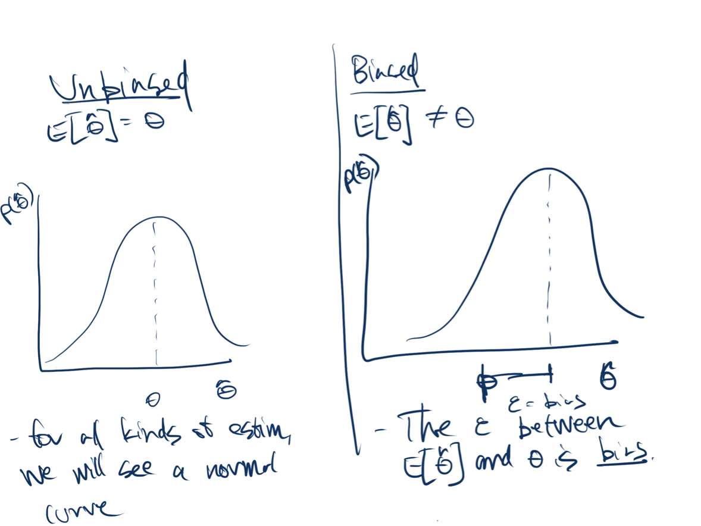
Desirable Properties of Estimators: Unbiasedness
(cont.)Desirable Properties of Estimators: Efficiency
- The MSE of an estimator \(\hat{\theta}\) is [ E[( - )^{2}] = V[] + (E[] - )^{2} ]
- Suppose you are taking temperature, and have two methods: (1) back of hand; (2) under-tongue. Which would you prefer?
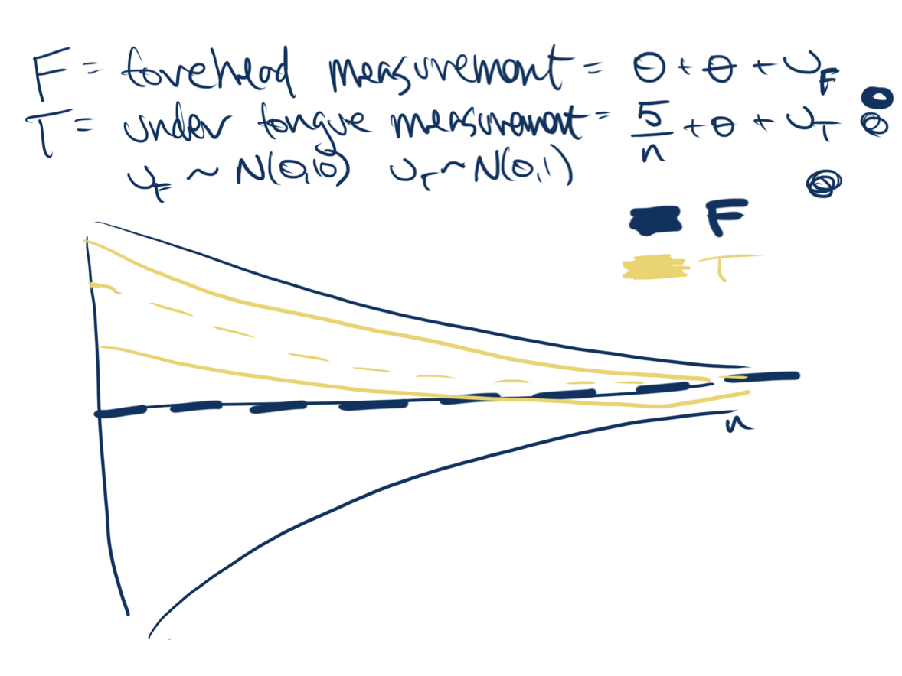
Desirable Properties of Estimators: Efficiency
Desirable Properties of Estimators: Consistency
An estimator $\hat{\theta}$ is consistent for $\theta$ if
$\hat{\theta} \overset{p}{\to} \theta$.
\note[item]{If an estimator isn't consistent, then many times we
would say it isn't worth using.}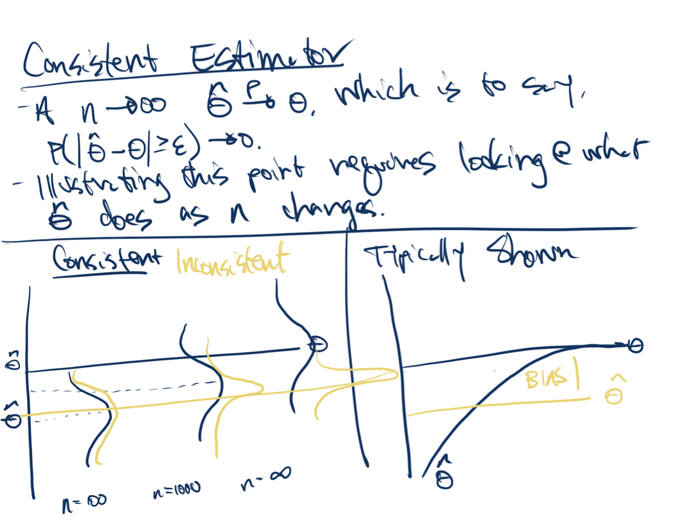
Desirable Properties of Estimators: Consistency
Applying Properties of Estimators
Evaluating Estimators
Which do you prefer?
- Draw two estimators: (1) sine in n – wavvy; (2) typically converging
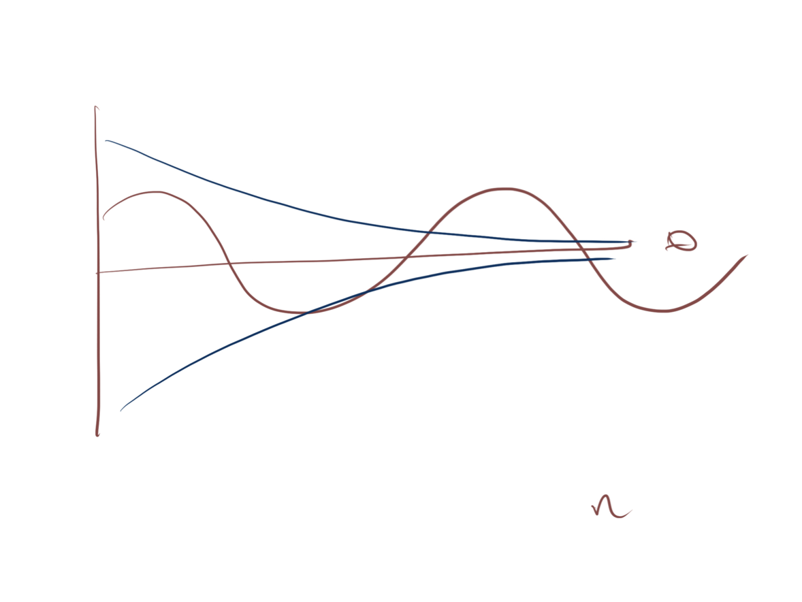
Evaluating Estimators (cont.)
- Draw two estimators
- Make both be consistent, one that is relatively more efficient.
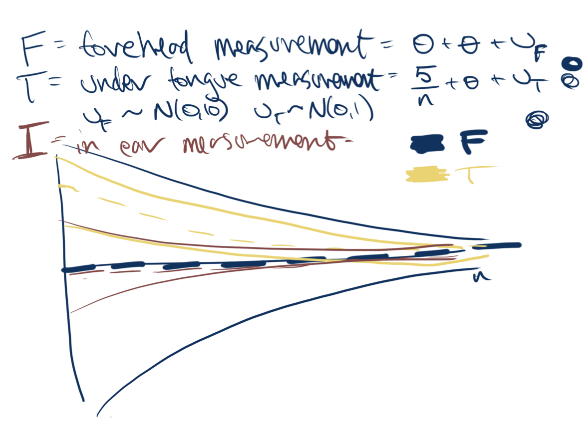
Desirable Properties of Estimators: Review
- An inconsistent estimator is of little use.
- A more efficient is estimator is preferable to a less efficient estimator, all else equal.
- An unbiased estimator is preferable to a biased estimator, all else equal.
- For inconsistent estimators, perhaps there is some level of
- More efficient estimators are preferrable, all else equal. But, in a business context there
Random Sampling
Reading: Independent and Identically Distributed
Reading: Independent and Identically Distributed
- Read Section 3.0 and 3.1 in Foundations of Agnostic Statistics (pages 91–96 in our copy of the book.) - Work to place the formal math definition into plan understanding. We will discuss this when you come back.
- Notice how \(\mu\) and \(\sigma^{2}\) are concepts that are immediately familiar, but they now represent population parameters.
- The mathematical formalism in
- Definition 3.1.2 – the Finite Population Mass Function shows how we could move from talking about actual people to random variables (but keep in mind that we will almost always assume an “infinite superpopulation”.)
- Notice how
Independent and Identically Distributed
Independent and Identically Distributed
- Undertake some process an arbitrary number of times—call it sampling —to create a value from a phenomenon.
- If each instance of sampling draws from the same probability distribution, then we say the collection of values are identically distributed .
- If none of the instances of sampling provide information about other instances of sampling, then we say the collection of values are independent .
Independent and Identically Distributed (cont.)
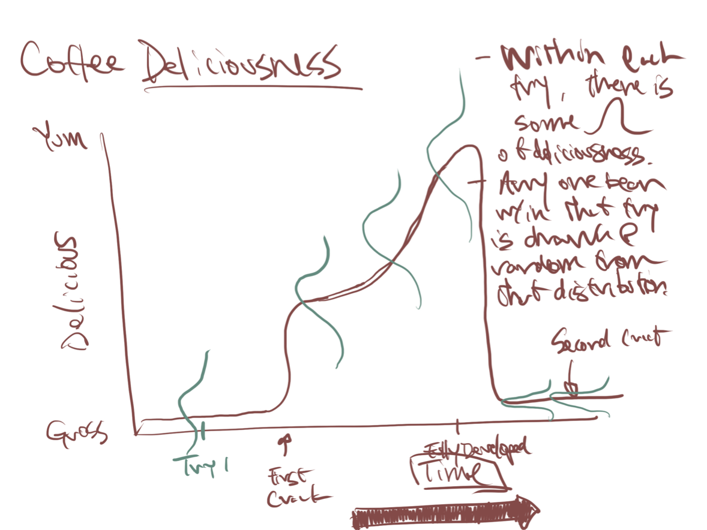
Each of the sets of
Problem 1: We have a finite sample in this roaster – there are 10,243 beans in it. Paul counted! Ha! After we draw and look at one, there are only 10,242 left to draw, and we’ve changed the distribution of the beans by taking one out. So, technically, we have a dependent sampling process.
But, subsequent ``trys’’ are not independent. When I know how roasted each bean in try (3) is, I know that each bean in try (4) is going to be more roasted.
Problem 2: The beans only get
Problem 3: Suppose you get one
Problem 4: What if all the big beans ``float’’ to the top and so get less heat? Then we would have a non-independent distribution!
Problem here is that I don’t think you can define a model where a very roasted bean in try 1 gives you information that beans in try 2 are likely to be more roasted, but not that the next bean in try 1 is likely to be more roasted. Any way I think of it, either both pairs are independent or not independent.
Making Assumptions
- What is a statistical assumption?
- When are they important?
- When can I violate them?
- What do I do if they are violated?
- Up until this point, all of our work has been axiomatic.
- We began with a principle, we looked at rules, and we observed what fell out.
- Now we’re stepping into the fun, but clumsy world that forces us to put these alabaster axioms to work.
Making Predictions
- When data are independent and identically distributed (IID), it is possible to learn desirable things from a sample: - Accurate characterizations of the probability distribution function and values
- Reliable characterizations of certainty and uncertainty
- We can learn about unseen population parameters from a sample and then use our domain knowledge to evaluate whether these population parameters apply to some circumstance.
- As data scientists, we might sometimes posess the entire universe of data and want to characterize it – ``What is the sentiment of all the employees in
- Much more frequently we’re interested in something else – making a statement about a population from limited data.
- What sets statistics apart is that it attempmts to characterize how certain we are about these predictions.
- Without IID, we might be incorrectly confident – leading to unforseen events. Or, we might learn someting about a population that isn’t informative of our target.
What Is a Population?
There are 100 U.S. Senators.
- One could reason about a finite population with 100
elements. \note[item]{Then, we \textit{know} the whole population, and
there is nothing to estimate.}- Or, one could assume a continuous distribution for fundraising.
- When we model data as draws from a random variable
- \(X\)
Learnosity: Is This IID?
Is This IID?
Note: This is a learnosity activity, just placing it here for organization.
For each of these, would you say that this sample is distributed IID? What do you understand about the process that brings you to your conclusion?
- Coffee - Goal: Understand how roasted a batch of coffee is.
- Sampling process: Dip into a drum to pull a set of 30 beans.
- Conduct a draft - Goal: Randomly select people for military service.
- Sampling process: Draw balls from an urn with a day of the year. Everybody born on that day goes to war.
- Produce training data for machine vision - Goal: Gather images of normal and abnormal cellular structures to train neural net to recognize cancerous cellular structures.
- Sampling process: Randomly select 10 patients (with consent!) from the general outpatient population (unlikely to have the cancer), and randomly select 10 patients (with consent!) from the oncology department (that are likely to have the cancer).
Is This IID? (cont.)
- Teach a computer to really read - Goal: Teach a computer to understand theme and plot (the work of School of Information professor David Bamman).
- Sampling process: Feed a neural network each word (in each sentence [ in each paragraph (in each chapter) ] ) of the English language literary canon.
- Any others? - Goal:
- Sampling process:
Reading: Sample Statistics
Reading: Sample Statistics
- Read pages 96–98.
- Stop before theorem 3.2.5.
Sample Statistics
Sample Statistics
Sample statistics are:
- Functions that are applied to samples of random variables
- Themselves random variables
- At this point, we don’t have any guarantee about what the sample statistics will look like under repeated sampling. If you’ve taken a stats course before, though, you’ll recognize that we’re building towards sampling distribution of these statistics.
Conduct Sampling
Conduct Sampling
Note: This is a learnosity activity, just placing it here for organization.
The goal is that this will solidify the understanding that students have from the reading and will move us forward into a conversation about expected value and the sample variance of the sample average.
- Students will be provided with data and starter code that produces a population.
- From this population, they will have sliders they can pull that will increase or decrease the number of samples that they take, the number of draws per sample, and the underlying population variation.
The Sample Mean as an Estimator
The Sample Mean
For IID random variables, $X_1,..X_n$, the _sample mean_ is
\[
\overline{X} = \frac{1}{n}\sum_{i = 1}^{n}X_{i}
\]- The sample mean is an estimator for \(\E[X]\) .
- Let’s dive into out first example of an estimator: the sample mean.
- I’m sure you’ve taken thousands of means in your life, but you might not have thought of the sample mean as an estimator.
- First, what kind of object is this? It’s a statistic. It’s a function of a sample, which is made up of random variables, so it is a random variable. This is really our statistical model that describes how a sample mean you write down in your analysis gets there.
- As statisticians, we’re not really interested in the sample mean for its own sake. We’re interested in the population mean. We’re using the sample mean, because it’s an estimator for the population mean.
The Sample Mean is an Estimator
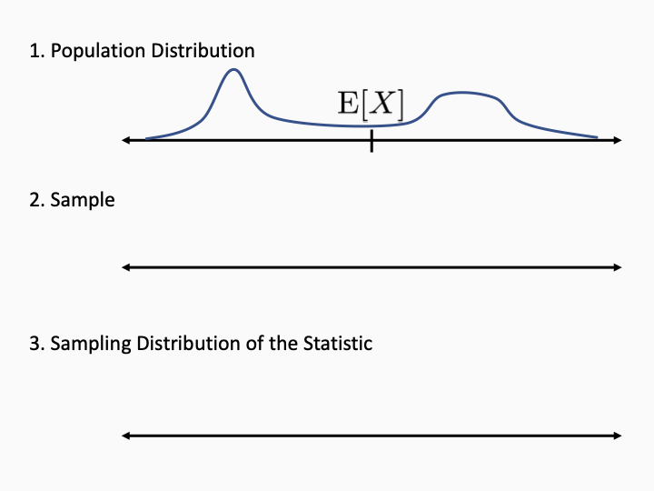
- Here’s a picture to clarify how the model works.
- There are three important objects to keep in mind.
- First, we have the population distribution, we don’t know what it is, but it’s fixed, and it has a fixed population mean.
- What happens when we run the model? nature reaches in and chooses datapoints. I’ll make a sample.
- From this sample, we compute the sample mean. Does it equal the population mean? of course not! well, in some cases we could get lucky, but generally no.
- what kind of object is the sample mean? it’s a random variable. if you could rewind time, we’d get a different mean.
- I’m not saying we can get two means, this is just a thought experiment.
- because the sample mean is a random variable, it has a sampling distribution. I’ll draw it here.
- There are two different distributions! don’t forget that, the population dist is not the same as the sampling distribution of the statistic.
Evaluating the Sample Mean as an Estimator
First Questions:
- Is the sample mean biased?
- How efficient is the sample mean?
- Once you start thinking about the sample mean as an estimator, the next step is to think about whether it’s a good estimator. Are there any better estimators?
- What are the properties that we want our estimators to have?
- Let’s start in this segment with these two.
Unbiasedness of the Sample Mean
For IID random variables, $X_1,..X_n$, the sample mean $\overline{X}$ is an unbiased estimator for the population mean $\E[X]$.- \(E[\overline{X}] = E[\frac{1}{n}(X_1 + X_2 +...+X_n) ]\)
- \(= \frac{1}{n}(E[X_1] + ... + E[X_n]) = E[X]\)
Efficiency of the Sample Mean
For IID random variables, $X_1,..X_n$, with population variance, $\V[X]$, the variance of the sample mean is
\[
\V\big[\overline{X}\big] = \frac{\V[X]}{n}
\]- \(\V\big[\overline{X}\big] = \V[ \frac{1}{n} (X_1 + X_2 +...+X_n)]\)
- \(= \frac{1}{n^2}( \V[X_1] + ... + \V[X_n]) = \frac{\V[X] }{n}\)
- Is this a good variance? It really depends on the population distribution. Depending on what the population looks like, there could be more efficient estimators. But at least the dependency on
- Soon, we’ll see that we can get a guarantee that the sample mean is actually close to the target.
Learnosity: Sampling Variance of the Sample Mean
Note: This is a learnosity activity, just placing it here for organization. - If you increase the sample size, does the sampling variance of the sample mean increase, decrease, or stay the same? - At what rate does this change? (Options include faster than the data, at the same rate at the data, slower than the data.) - If you increase the sample size, does the population variance, \(\V[X]\) , change? (Hint: It is a population parameter.)
Consistency and the Continuous Mapping Theorem
Consistency
“If you can’t get it right as \(n\) goes to infinity, you shouldn’t be in this business.”How can we formalize “right as \(n\) goes to infinity?”
- Estimators may converge at different rates.
- Deterministic guarantees are not possible.
- It’s no exaggeration to say that consistency is the most important property that an estimator can have.
- So what exactly does it mean?
- A quote from the Nobel-prize winning economist Clive Granger.
- We want to be correct as the sample size gets bigger and bigger - how can we write that into a mathematical property?
- it’s not obvious for at least two reasons.
- First, different estimators can converge at different rates. it may take
- Second, there’s no deterministic guarantee. There’s no law of physics that prevents a coin from landing heads over and over forever. all we can say is that the probability of that gets smaller and smaller as the number of flips increases.
Intuition for Convergence in Probability
- Let \(T_{(1)}\) be the statistic with 1 datapoint.
- Let \(T_{(2)}\) be the statistic with 2 datapoints.
- Let \(T_{(3)}\) be the statistic with 3 datapoints.
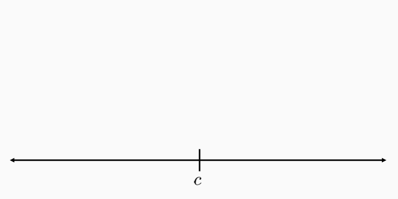
- Here’s a stylize story to motivate the definition of consistency.
- Let’s start with a sequence of random variables
- Let
- You tell me you want to converge on the target. So I say, well give me some parameters, give me a window around the target that is acceptable. also, 100
- I guarantee, that eventually in this sequence, there is a T that is in that window with 90
- Is the guarantee not strong enough? feel free to increase it: let’s say 99
- Is the window actually too wide? make it narrower!…
Convergence in Probability
Let $( T_{(1)}, T_{(2)}, T_{(3)},...)$ be a sequence of random variables and let $c\in \R$. $T_{(n)}$_converges in probability_ to $c$ if for all $\epsilon > 0$,
$\lim_{n \rightarrow \infty} P\Big[ T_{(n)} \in(c-\epsilon, c+\epsilon) \Big] = 1$
We write this as $T_{(n)} \overset{p}{\rightarrow} c$.
- An estimator \(\hat \theta\) is consistent for \(\theta\) , if \(\hat \theta \overset{p}{\rightarrow} \theta\) .
Continuous Mapping Intuition
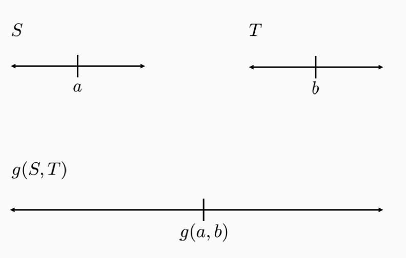
- Consistency is really important. We’re going to design a lot of estimators and we’ll want to prove that they are consistent.
- There are different strategies you can use to prove that estimators are consistent. The book likes to use a very powerful result about the plug in principle, but you have to know a lot more math to apply it rigorously.
- We prefer to use a famous theorem called the continuous mapping theorem. It allows you to prove convergence in probability when you combine estimators together.
- Here’s a picture to show what we mean. we have two estimators S and T that each converge to some target. We have a function g that takes a,b to this point. As long as g is consistent, it turns out that g(S,T) is also consistent.
Let $( S_{(1)}, S_{(2)}, S_{(3)},...)$ and $( T_{(1)}, T_{(2)}, T_{(3)},...)$ be two sequences of random variables. Let $g: \R^2 \rightarrow \R$ be a continuous function. If $S_{(n)} \overset{p}{\rightarrow} a \in \R$ and $T_{(n)} \overset{p}{\rightarrow} b \in \R$, then $g(S_{(n)}, T_{(n)}) \overset{p}{\rightarrow} g(a,b)$- Given
- Want
- Equivalent to: given probability
- By cont. of
- by convergence of S and T,
- let
- This implies
Reading: Weak Law of Large Numbers
Reading: Weak Law of Large Numbers
Read page 100, beginning at theorem 3.2.8, through the end of page 102.
Weak Law of Large Numbers
The Weak Law of Large Numbers
Let \((X_1,X_2,X_3,...)\) be a sequence of i.i.d. random variables with finite variance. Let \(\overline{X}_{(n)} = \frac{1}{n} \sum_{i=1}^n X_i\). Then \(\overline{X}_{(n)} \overset{p}{\rightarrow} \E[X]\)
- Equivalently: The sample mean is consistent for the population mean.
- We have all the pieces in place to present one of the most classic results in statistics.
- The WLLN states that as sample size increases, the sample mean converges in probability to the population mean.
- Or much more simply, the sample mean is consistent.
Consequences of WLLN
The sample mean is consistent. - The error converges in probability to zero. - The sample mean is accurate, as long as we can make \(n\) large enough.
As a building block to study other estimators. - Combine WLLN with Continuous Mapping Theorem.
- What do we take away from the WLLN?
- First, we learned that the sample mean is great. On top of being unbiased, we also have consistency.
- Whatever the variable is: wavelengths of cosmic rays, or how cranky people in Berkeley are. You never know the true population mean, but if you crank up n enough, you’ll can be accurate to any level.
- Now, honestly, you already knew the sample mean was great. you don’t need more reasons to use the mean. And we can write down more precise statements about the convergence of the sample mean. So why is the WLLN so important?
- But is a second reason WLLN is important. it is a building block we can use to study other estimators.
Applying the WLLN

Objective: Estimate the cdf \(F\) at a point \(x\) .
Idea: Use empirical cdf
- F(x) = P(X < x)
- \(T_{(n)}(x) = \frac{1}{n}\sum I(X_i \leq x)\)
- \(T(x) \overset{p}{\rightarrow}\E[ I(X \leq x) ] = P(X \leq x) = F(x)\)
- So we can consistently estimate the CDF at any point.
- There are stronger convergence results for the cdf, so we don’t use this version too much
- But this is an example of how WLLN can help us with other estimators. we’ll use it again in the future.
Proof of the Weak Law of Large Numbers
Proof of the Weak Law of Large Numbers
Given random variable \(X\) and \(\epsilon > 0\) .
Proof of the Weak Law of Large Numbers
Given random variable \(X\) and \(\epsilon > 0\) .
Let \(D = | \bar X - \E[X] |\) \(\V[\bar X] = \E[D^2] = \V[X]/n\) \(\V[\bar X] = \E[D^2] = \E[D^2 | D < \epsilon] P(D < \epsilon) + \E[D^2 | D \geq \epsilon]P(D \geq \epsilon)\) \(\geq 0 + \epsilon^2 P(D \geq \epsilon)\) \(P(D \geq \epsilon) \leq \frac{\V[X]}{ \epsilon^2 n} \overset{p}{\rightarrow} 0\)
- The key to this proof is we have to get from a small variance to a statement about deviations.
- Why can’t we be outside this window? Let’s draw the probability distribution.
- The point is that if there’s some probability outside the window, that represents deviations that are large, and that has the effect of keeping variance up. that can’t happen.
Simulating the WLLN
Note: This is a learnosity activity, we’re just including it here for organization.
Students will work through the notebook called
Reading: Estimating Population Variance
Reading: Estimating Population Variance
- Read pages 105–108, stopping before the beginning of the next section.
- You are going to use the plug-in principle , which is a general approach for designing estimators in a sample.
- Note: This is a READING CALL, just placing it here for organization.
Estimating Population Variance
Why Estimate Variance?
- How much coffee do students drink on average?
- How much does coffee intake differ from student to student?
- So far, we’ve talked about estimating the population mean.
- The mean is really important, but there are other quantities that we might want to estimate.
- Let’s consider the variance - usually the second-most important feature you can learn.
- If you estimate mean coffee intake, that’s is helpful, but just one number, nothing about the shape of the distribution.
- IF you also know variance, you start to have at least some information about shape. That can really improve your understanding.
Applying the Plug-In Principle
Population Variance: \(\V[X] = \E[X^{2}] - \E[X]^2\)
Given a sample \(\bs X = (X_1,X_2,...,X_n)\), the plug-in variance estimator is, \[\begin{align*} \tilde{\V}(\bs X) &= \overline{X^{2}} - \overline{X}^{2} \end{align*}\]
- How do we come up with an estimator for variance?
- We use what we call the plug-in principle. All that means is that we just replace population quantities with sample analogues.
- In this case, we can write the variance as the difference of two expectations.
- We just replace each expectation with a sample mean.
Consistency of the Plug-In Estimator
Let \((X_1,X_2,X_3,...)\) be a sequence of i.i.d. random variables with finite variance \(\V[X]\). Then \(\tilde{\V}(\bs X)=\overline{X^{2}} - \overline{X}^{2}\) is consistent for \(\V[X]\).
- Proof:
- \(\overline{X^2}\overset{p}{\rightarrow}\E[X^2]\)
- Let
- \(g(\overline{X^2}, \overline{X}) = \tilde{\V}(\bs X)\)
- CMT
Bias of the Plug-In Variance Estimator
Let \((X_1,X_2,X_3,...)\) be a sequence of i.i.d. random variables with finite variance \(\V[X]\) . Then
\(\E[\tilde{\V}(\bs X)] = \frac{n-1}{n} \V[X]\)
- What about bias? Unfortunately, the plug-in estimator is biased. That’s pretty common, the plug-in principle often gives us consistent estimators, but doesn’t help with bias.
- You can compute the expectation of the estimator, and you can see that it’s almost what you want.
- There’s just an extra factor of
- If you think about it, if we knew the true population mean, we could measure deviations from it to get an unbiased estimator. But we have the sample mean, and the sample mean gets pulled towards where the most data is, pushing the estimate down.
A Better Variance Estimator
Given a sample \(\bs X = (X_1,X_2,...,X_n)\), the unbiased sample variance estimator is, \[\begin{align*} \hat{\V}(\bs X) &= \frac{n}{n-1} \Big( \overline{X^{2}} - \overline{X}^{2} \Big) \end{align*}\]
- So the plug-in estimator is biased, but we know exactly what the bias is so we can fix it.
- We just adjust it by adding a correction factor. It’s called a degrees of freedom correction.
- This makes the estimator unbiased, and it’s still consistent, because this fraction goes to 1.
- This estimator has really good properties, and it’s the standard formula you should remember.
Standard Errors
standout
Point Estimate \(\Leftrightarrow\) Uncertainty
- We’ve been talking about ways to generate a point estimate for a parameter.
- But the point estimate is really only half the story.
- That’s because the point estimate is not the same as the true parameter.
- If all you have is the point estimate, and no other way to judge how far off it might be, it may not be very valuable at all.
- If you’re just messing around with data for fun, you may not care, but when the stakes get high, you realize you really need a way to capture that uncertainty.
Importance of Uncertainty
Estimate: Our candidate has 52 % support.
Importance of Uncertainty

Estimate: The maximum dose of the medication is 26mg.
Importance of Uncertainty
Estimate: The angle of the tower is 90 degrees.
The Sampling Distribution of the Statistic
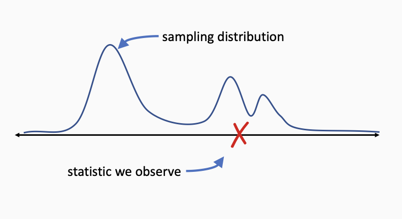
Standard Error: (Estimated) standard deviation of the sampling distribution
- Remember that a statistic IS a random variable
- You get a single number. But the model says that there are other values that are possible.
- There is an entire probability distribution over possible values.
- If we could see this distribution, we could understand how representative our one value is.
- We could gauge how different it might be from the true parameter.
- We can’t see the sampling distribution, but if i.i.d. holds, we can still learn things about it.
- A good first question: how spread out is it? standard error = standard deviation of the sampling dist.
- You can think of the standard error as estimating, if you could run your study over and over, how far apart the values would be on average. that’s an important indicator of uncertainty.
Reporting standard errors
- The mean number of mushrooms per pizza was 13.2 (SE 3.6).
- The time for mice to navigate the maze was 35 \(\pm 2\) seconds.
- Really, whenever you report a statistic, you always want to include standard errors.
- unless you have another method of expressing uncertainty.
- There are a couple of ways to include them…
Standard Errors, The Sample Variance, and Standard
Deviation
Many Measures of Dispersion
- It can seem like we’re just making a salad with all these concepts!
- I mean, I am a Berkeley vegetarian, but even I don’t like variance salads.
- The
- The
- The
- Finally, the
Motivating The Central Limit Theorem
Capturing Uncertainty
Need tools to capture how far off our estimate may be.
- Standard Error: the (estimated) standard deviation of the sampling distribution of the estimator.
- But a standard error is just one number…
- We’ve talked about how important uncertainty is.
- A point estimate by itself isn’t all that useful. we need a way to capture how far off it might be
- One answer to that is the standard error, which is an estimate for the standard deviation of the sampling distribution of a statistic.
- But the standard error doesn’t capture everything about the sampling distribution.
- It’s just one number. it can give you a general idea, but can’t help you make precise statements about what parameter values are plausible.
Uncertainty Example
- Hidden fact: Population mean = 0
- Idea: Market if estimate is 2 standard errors above 0.
- Here’s an example. You want to understand whether vitamin W improves performance on a statistics test.
- You don’t know this, but vitamin W doesn’t do anything
- You estimate the performance, and it’s positive, great!
- But you know that there’s uncertainty. So you’re not conviced the effect is really positive
- You decide on this rule: if the estimate is at least 2 standard errors away from zero, you’ll take the vitamin to market.
- That’s actually not a terrible rule of thumb. This is a very very simplified version of a hypothesis test , but I think there’s enough detail to make this point.
The Importance of Shape
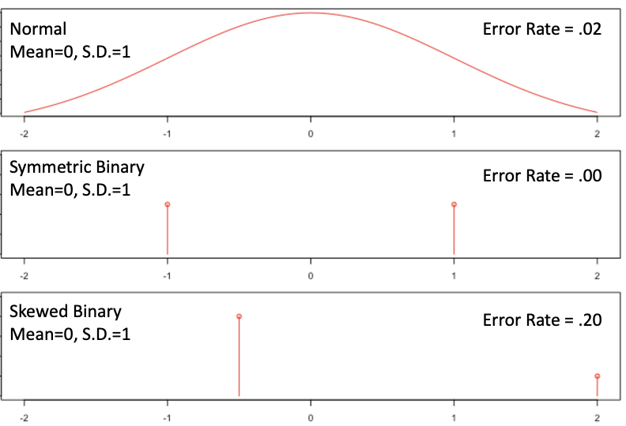
- Here are three possible sampling distributions for the statistic. All 3 of them have a mean of 0 and a standard error of 1.
- So if you get an estimate of 2, you will take vitamin W to market. and that’s a mistake because the true effect is zero.
- The question is, how likely are you to make a mistake in each case?
- So the shape really matters when we want to express uncertainty more precisely. That seems like a problem, because there are so many possible shapes out there.
The Central Limit Theorem
For a __very broad__ class of population distributions, the sampling distribution of the mean becomes approximately normal as the sample size grows large.- It turns out that a very famous theorem can help us. It’s called the CLT.
- The CLT says that, yes, there are a lot of possible distributions out there. If you have a small sample size, the variety is a big problem
- But as the sample size grows large, the sampling distribution of the sample mean becomes more and more normal.
- This is great because it’s going to unlock a lot of important tools, including confidence interval and hypothesis tests.
- Because of that, this is often viewed as the most important theorem in all of classical statistics
Reading: The Central Limit Theorem
Reading: The Central Limit Theorem
Note: This is a reading call, we’re just placing it here for organization.
Read pages 108 and 109 of section 3.2.4. There’s no need to read through the demonstration of Slutsky’s theorem, but you can if you would like.
- Rather than proving the CLT, we are going to ask you to work through a short demonstration against data that we hope will convince you of the CLT’s effectiveness.
- The book is terse in its presentation of when and how the CLT applies. We will fill that out when we come back together.
Apply the Central Limit Theorem
Apply the Central Limit Theorem
Note: This is a learnosity activity, just placing it here for organization.
Central Limit Theorem
Reminder of Context
- The WLLN tells us what happens to the sample mean as \(n \to \infty\) : \(\overline{X} \overset{p}{\to} \E[X]\)
- We also know that, as \(n \to \infty\) , we can generate an increasingly good estimate for \(\V[X]\) because \(\overline{X^{2}} - \overline{X}^{2} \overset{p}{\to} \V[X]\)
- For more precise statements about uncertainty, we need the sampling distribution of the statistic.
We were really glad when we saw the result of the WLLN.
From weak assumptions, we can put together an estimator
What if we want to know more information about this estimator?
Convergence in Distribution
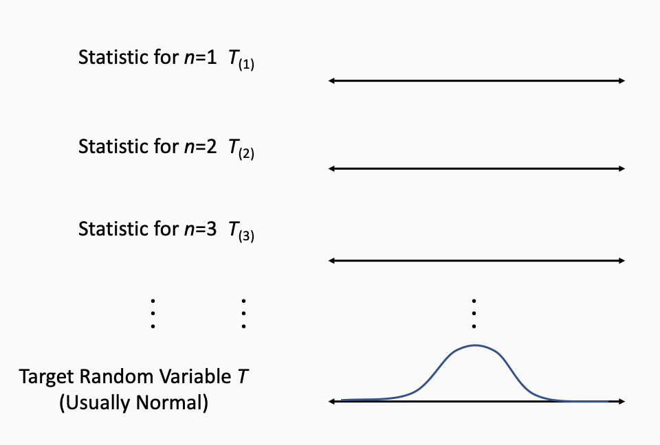
Let’s build out the idea of
Suppse you have a sequence of random variables, for now, it will be a set of sample means.
First, suppose that you take a sample of size 1, and return the average. What will you see?
Then, suppose that you take a sample of size 2, and return the average. What will you see? Will this larger sample have a larger or a smaller sampling variance of the mean? (This is the WLLN claim).
The idea of convergence in distribution, is that as you go along the sequence of distributions, the shape
Convergence in distribution is much stronger than just a single point converging like we had for the WLLN.
The whole distribution not just a central tendency for example, converges to the mean.
Convergence in Distribution
Let \((T_{(1)}, T_{(2)}, T_{(3)}, ...)\) be a sequence of random variables, with cdfs \((F_{(1)}, F_{(2)}, F_{(3)}, ...)\), and let \(T\) be a random variable with cdf \(F\). Then \(T_{(n)}\)converges in distribution to \(T\) if, for all \(t\in \R\) at which \(F\) is continuous, \(\lim_{n \rightarrow \infty} F_{(n)}(t) = F(t).\) We denote this as \(T_{(n)} \overset{d}{\rightarrow} T.\)
- Here’s the statement, and the thing to notice is that the actual statement of convergence is in terms of the CDFs
- You might hope it was about pdfs, but that’s not possible. for example, if you have a discrete population, you can never have a continuous statistics
- Also, every random variable in the world has a cdf, so that makes this more universal.
The need to Standardize
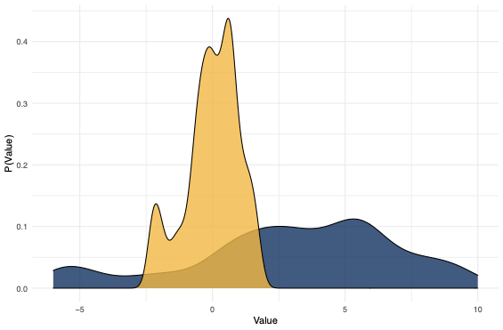
- We want to say that the distribution of the sample mean converges in distribution to the normal, but there’s one more wrinkle.
- Remember that as n increases, the distribution gets thinner and thinner.
- The variance decreases as 1/n
- So we can’t just look at the raw distribution, which approaches a spike. We have to stretch it back out so that the width is a constant.
Standardizing the Sample Mean
For IID random variables $(X_1,X_2,...,X_n)$
with finite $\E[x] = \mu$ and finite $\V[X] = \sigma^2$,
then __the standardized sample mean__ is:
$Z = \frac{\left(\overline{X} - \E\big[\overline{X}\big]
\right)}{\sigma\big[\overline{X}\big]} =
\frac{\sqrt{n}\big(\overline{X} - \mu\big)}{\sigma}.$- The standardized sample mean always has mean 0 and standard deviation 1.
- Recall,
The Central Limit Theorem
Let $(X_1,X_2,X_3,...)$ be a sequence of i.i.d. random variables with finite mean $\E[X] = \mu$ and finite variance $\V[X] = \sigma^2$,
$Z = \frac{\sqrt{n}\big(\overline{X} - \mu\big)}{\sigma} \overset{d}{\to} N(0,1)$% $$% which is the equivalent to% $$% \sqrt{n}(\overline{X} - \mu) \overset{d}{\to} N(0, \sigma^{2})% $$- With all that out of the way, we can finally state the CLT
- To summarize: As long as n is large enough, then the mean,
- It doesn’t matter what the population distribution looks like.
- This means that we can run hypothesis tests and make precise statements about uncertainty.
Generality of the CLT
The CLT applies to:
- Continuous Random Variables
- Discrete Random Variables
- Symmetric Random Variables
- Asymmetric Random Variables
Only Requirements:
- Data points are IID.
- Population has finite variance.
Versions of the CLT exist for many other statistics.
What Sample Size is Enough?
The CLT works in the limit as
\(n\to \infty\) . What can we say for a finite \(n < \infty\) ?
- Rule of Thumb: \(n=30\) for CLT to “kick in.”
- Reality: Convergence depends on how non-normal population is. - A normal population requires \(n=1\) .
- Highly skewed distributions may require \(n=100\) , \(n=1000\) , or more.
When you were working with a normal underlying distribution, how quickly with a sample average move
If two distributions have the same
There’s a general rule of thumb that for
Learnosity: When Does the CLT Apply?
Where and When Does the CLT Apply? Part III
Which of these random variables has an approximately normal distribution because of the CLT? - \(X=\) hours spent by one individual on a 203 homework assignment - \(X=\) average hours spent by randomly assigned study groups of size 4 on the same 203 homework - \(X=\) number of barks by a dog named Rex for a one-hour period at night
Where and When Does the CLT Apply? Part III
Which of these random variables has an approximately normal distribution because of the CLT? - \(X=\) total number of barks by a neighborhood of dogs for a one-hour period at night - \(X=\) age of a randomly selected MIDS student - \(X=\) average of sample of 10 randomly selected MIDS students - \(X=\) VADER sentiment of a sample of 100 SMS messages
The Plug-In Principle
The Plug-In Principle
Want mean of population \(\rightarrow\) Mean of sample.
Want variance of population \(\rightarrow\) Variance of sample.
Want \(f(E[X], V[X])\) ? \(\rightarrow\) \(f(\bar X, \hat V(X))\)
See the Pattern?
- I want to discuss this idea of the Plug-In principle
- The book uses it a lot, but it also glosses over the details
- Now you’ve seen a few estimators, and you may start to notice a pattern…
- If you want a function of the population variance, you can plug the sample variance into the function
- So statisticians started to notice, hey, if we just plug in these sample analogues, we seem to get good estimators.
- Is this just an accident? Or is there something deeper going on? Can we use this to find estimators for more parameters?
The Plug-In Principle
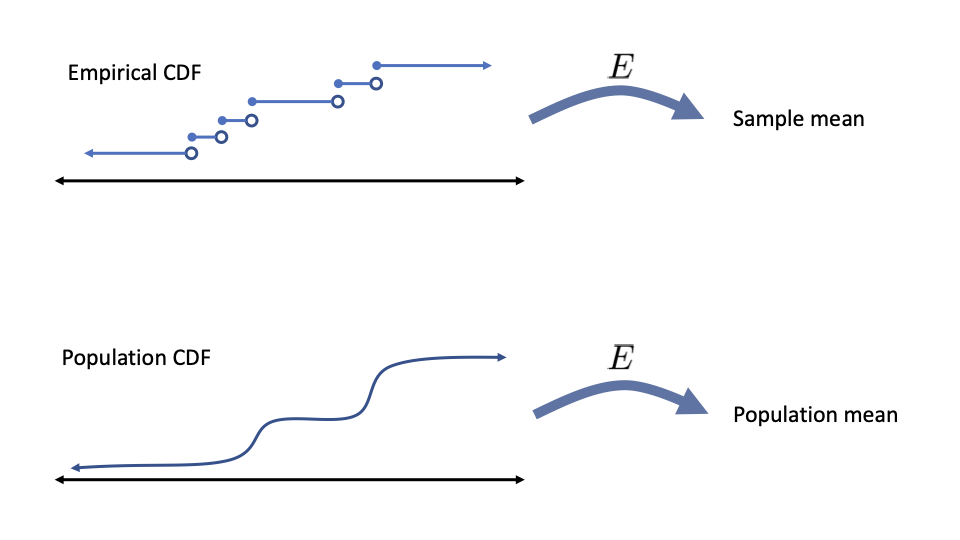
- It turns out, yes, there is something going on
- At the bottom, we have a population, represented as a CDF. We apply expectation to it, to get the population mean
- Now at the top, we have our sample of data, represented by the empirical CDF. Well, if you take the empirical distribution and apply expectation to it, you get the sample mean.
- What’s key here, is that these expectations are exactly the same operator! You really need to take measure theory to prove this, but hopefully that seems believable
- Now, what happens when
- We know the empirical CDF converges in distribution on the population CDF.
- We need the expectation operator to be continuous, and that’s not easy to define here. but if it’s smooth enough, as the empirical cdf approaches the true cdf, it makes sense that the sample mean approaches the population mean in probability.
- This works a lot of the time. For a really large class of operators, if you plug in the empirical cdf for the true one, you get a consistent estimator.
- But that’s not all. these estimators are consistent, and they are also asymptotically normal
- That’s harder to demonstrate, but here’s a hint. if you look at a point on the CDF function, you can write it as a sample mean - you add a 1 for every point to the left, an 0 for every point to the right. So the distribution of this point approaches the normal. So you can maybe believe that if the deviations are small enough, when you pass them through the expectation, you get another normal sampling distribution.
- So that’s the plug-in principle. It’s pretty important, because it’s also the basis for bootstrap theory. It does take some advanced math to check that it actually applies to your estimator. So we won’t prove things with it in this class, but it’s good to know that it exists, and we will use it to come up with ideas for estimators.
Reading Assignment
Reading Assignment
Only if you’re interested, read section 3.3 - 3.3.1 to learn more about the Plug-In Principle.
Asymptotic Theory
Across a range of applications, small samples are problems. - If we’ve got a lot of data, though, we can rely on weaker requirements - Asymptotic properties of estimators ask the question, What happens when we have a lot of data? - In general, as \(n\to \infty\) , does \(\hat{\theta}\) converge in distribution or probability to something that is useful or desirable?
- Tie the problems back to the small-sample bias of the Plug-In Sampling Variance
Reading: Asymptotics
Note: This is a READING CALL. We’re placing it here for organization. - The interested student can read pages 111-114. - But, we might recommend skipping it if you’re constrained. - The take home is that there is an asymptotic statement of: - Being Normally Distributed - SE, MSE and Efficiency - Sampling Variance and Sampling Standard Error
Reading: The Plug-In Principle
- \(F(x)\) is the cumulative distribution function, the CDF
- \(f(x)\) is the probability distribution function, the PDF
- \(\hat{F}(x) \not= F(x)\) and \(\hat{f}(x) \not= F(x)\)
- As \(n\to \infty\) we hope that \(\hat{F}(x) \overset{d}{\to}F(x)\) and \(\hat{f}(x)\overset{d}{\to}f(x)\) .
- We’re not going to lie to you… this is a challenging section to read.
- A couple of notes are in order.
The Plug-In Principle
You _know_ what the processes for calculating an expectation
and variance are.
\begin{align*}
E[X] &= T_{E}(F) = \int x \cdot dF(x) \\
V[E] &= T_{V}(F) = \int (x - E[X])^{2} \cdot dF(x)
\end{align*}These are the statistical functionals for expectation and variance.
- You might be annoyed that we’re dealing with
The Plug-In Principle (cont.)
For i.i.d. random variables $X_{1}, X_{2}, \dots, X_{n}$, with a
common CDF $F$, the plug in estimator for $\theta = T(F)$ is just
$\hat{\theta} = T(\hat{F})$.
\begin{align*}
\hat{E}(X) &= T_{E}(\hat{F}) \\
& = \sum x \cdot \hat{f}(x) \\
& = \sum x \cdot \frac{I(X_{i} = x)}{n} \\
&= \frac{1}{n} \sum x \\
&= \overline{X} \\
\end{align*}Example of the Plug-In Principle
Suppose you there is some discrete process that places values into the
random variable $X$.
\note[item]{(You can't see equation process!)}- \(F_{X}(1) = 1/3\)
- \(F_{X}(2) = 1/6\)
- \(F_{X}(3) = 0\)
- \(F_{X}(4) = 1/2\)
But, you do get to produce i.i.d. random draws from the
process. Of 1000 draws: \\\begin{tabular}{llll}
\textbf{1} & \textbf{2} & \textbf{3} & \textbf{4}
\hline
331 & 156 & 0 & 513
\end{tabular}Example of the Plug-In Principle, cont’d
\(\hat{E}(\bs X) = T_{E}(\hat{F})\)
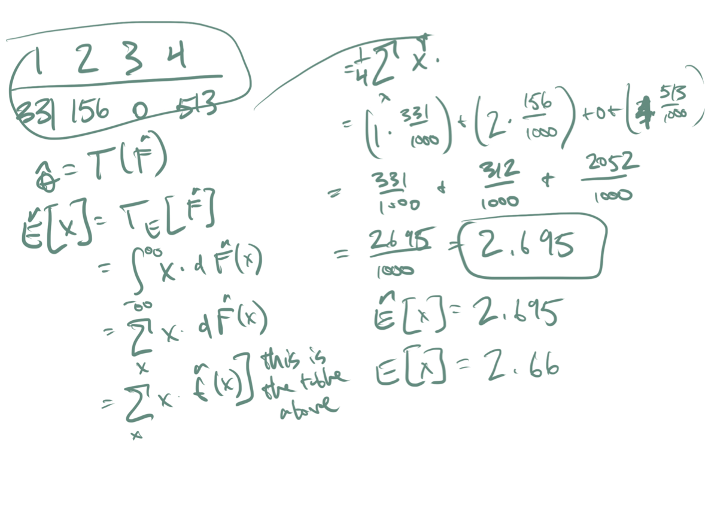
Reading: Kernel Methods Esttimate the PDF
Read pages 121 - 124.
Kernel Methods, Part I
- Cannot directly observe the joint PDF.
- For discrete RV, approximations come through frequency tables.
- For continuous RV, approximations come through kernel density estimates: [ {K}(x) = {i=1}^{n}K_{b}(x - X_{i}), x ]
Kernel Methods, Part II
- Kernel methods are smoothing methods
- The kernel is some weighting function
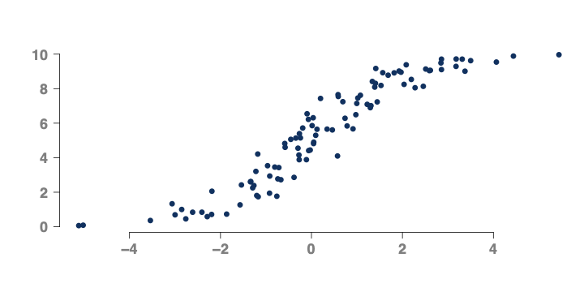
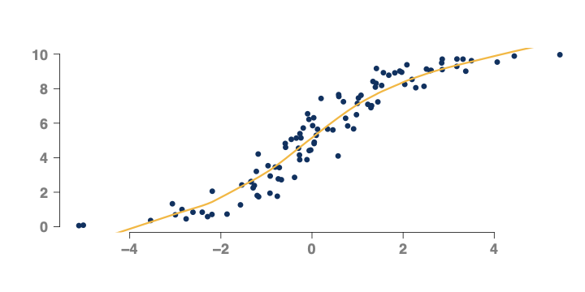
Kernel Methods, part III
As smoothing function, these permit plug in estimates that are directly analogous to the estimating functionals of the CDF.
The _Kernel plug-in estimator_ of $\theta = T(F)$
is \[\hat{\theta}_{k} = T\big(\hat{F}_{K}\big),\] where,
$\hat{F}_{K} = \int_{-\infty}^{x} \hat{f}(u)du$. Kernel Methods, part IV
We know the functional for the expected value has a specific
``shape'' \[\E[Y] = \int y\cdot df(y).\] So, the feasible kernel method is
\[\hat{\E}_{k}(\bs Y) = \int_{-\infty}^{\infty} y \cdot d\hat{f}_{K}(y)\]Kernel Methods, part V
- \(\E[Y]\) and \(\E[Y|X]\) are lowest MSE estimates of \(Y\)
\[\begin{align*} \hat{\E}_{K}(\bs Y) &= \int y\hat{f}(y) \\ \hat{\E}_{K}(\bs Y|X=x]) &= \int y \hat{f}_{Y|X}(y|x) \\ \end{align*}\] - If you can produce i.i.d. samples from \(f_{Y|X}\) , you can produce estimates, \(\hat{f}_{K}(y|x)\) that get ever closer to the true value
- The next sections in the course combine these facts with the CLT distributional shapes so that we can make
Apply Kernel Methods
Note: This is a LEARNOSITY activity. We’re just placing it here for organization.